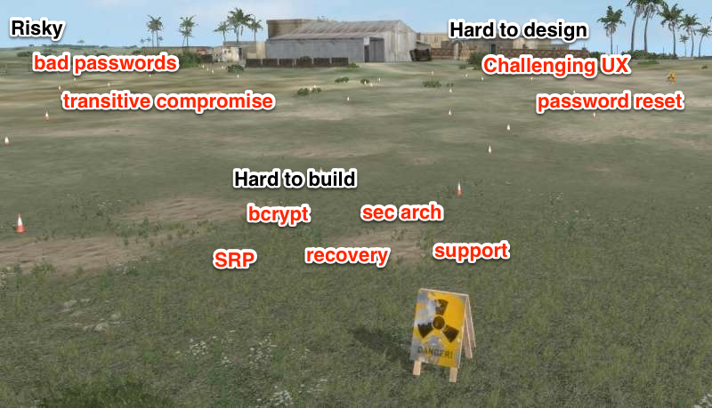

Getting Users Signed In
Lloyd Hilaiel - @lloydhilaiel - Mozilla
http://lloyd.github.com/persona-preso
People want a little dating before marriage.
Eric Vishria - Rockmelt
http://blog.mailchimp.com/social-login-buttons-arent-worth-it/
http://techcrunch.com/2012/11/30/email-social-signup-rockmelt/

You need a backup, but building it yourself sucks.
that was fun, now log in here.
<script src="https://login.persona.org/include.js"></script>
<script>
navigator.id.watch({
loggedInUser: <%- JSON.stringify(email) %>,
onlogin: function(assertion) {
$.ajax({
url: '/auth', method: 'post', type: 'json',
data: { assertion: assertion },
success: function () {
document.location.reload();
}
});
}
});
$(".login_button").on('click', function() { navigator.id.request(); });
</script>
<script src="https://login.persona.org/include.js"></script>
<script>
navigator.id.watch({
onlogout: function() { document.location = '/logout'; }
});
$(".logout_button").on('click', function() { navigator.id.logout(); });
</script>
app.post('/auth', function(req, res) {
request.post({
url: 'https://login.persona.org/verify',
json: {
assertion: req.body.assertion,
audience: "http://127.0.0.1:3000"
}
}, function(e, r, body) {
if(body && body.email) {
req.session.email = body.email;
res.json({ success: true });
} else {
res.json({ success: false });
}
});
});
ALTER TABLE user DROP COLUMN password> 90% support
Mozilla Persona is a new authentication system for the web. It aims to reduce implementation cost for developers while improving usability and security.
https://github.com/lloyd/node.js-persona-example
or
https://developer.mozilla.org/en-US/docs/Persona/Quick_Setup
/
#